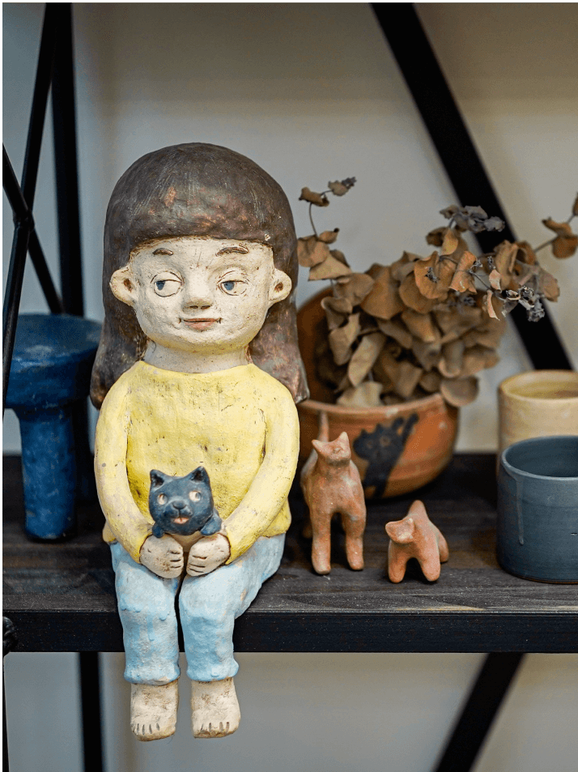

© YOSHIPOTTERY ALL RIGHTS RESERVED.

關於我們
ABOUT
又煦陶作位於台灣台東市，主理者回家郷開設陶藝工作室，提供陶藝教學與器皿製作，希望工藝能走進大家的生活中。
又煦有再度和煦溫暖之意，製作的生活陶器以簡單的線條及釉色為主，一個一個拉胚手作，保留陶器樸質與自然的特性，也延續工藝技法及它的美好。


生活陶
WORKS
作品名稱
作品名稱
作品名稱
藝術陶
ARTS

課程教學
COURSES
學習以土球、土條、土板三大類基礎做陶技法，
製作日常中會使用到的物品。

手捏器皿
學習從掌上型小陶偶， 到中型陶偶挖空或土條製作技法，配合化妝土上色。

陶偶雕塑
學習以轆轤製作杯、碗、盤形，技巧較高，表面質感較為圓滑平整。

基礎拉胚
給上過任何一期基礎陶藝課的學員。 可自由安排時段，可一週多堂，有利於作品進度穩定。適合有自己的創作想法，或是想精進技術的人。
進階創作
手捏器皿：可選一個陶碗、陶杯或盆栽。 拉胚+修胚體驗課：製作基本杯、碗。需安排不同天兩個時段。

體驗 / 團體課
CLASSES
CONTACT
聯絡我們
工作室採預約制，如預參觀請來電洽詢。
950
台東縣台東市杭州街118號1樓
台東縣台東市杭州街118號1樓
(+886) 921-271-867
yoshipottery@gmail.com
follow us
 /
/

/